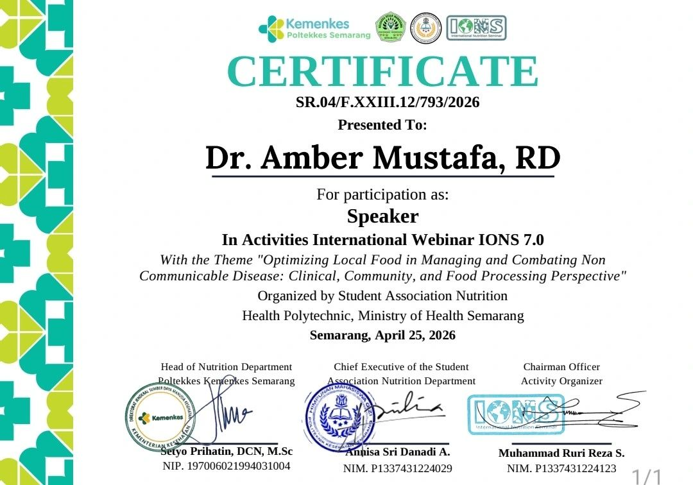

Date: 25 April 2026
Location: Online (hosted from Semarang, Indonesia)
Organization: Student Association Nutrition, Health Polytechnic, Ministry of Health Semarang (Poltekkes Kemenkes Semarang), in collaboration with International Online Nutrition Seminar (IONS)
Presenters: Amber Mustafa, RD (Pakistan), alongside an international panel of speakers from Indonesia and Malaysia
I was invited to represent Pakistan as a speaker at IONS 7.0, an international online nutrition seminar organised by the Student Association of the Nutrition Department at Health Polytechnic, Ministry of Health, Semarang, Indonesia — bringing together dietitians, nutrition students, and academics from across South and Southeast Asia.
Theme: optimising local food for non-communicable disease
This year's seminar theme was "Optimizing Local Food in Managing and Combating Non-Communicable Disease: Clinical, Community, and Food Processing Perspectives." It's a theme close to how I practice — the idea that the most sustainable nutrition interventions for diabetes, hypertension, obesity, and other non-communicable diseases (NCDs) are built around foods that are already affordable, familiar, and culturally appropriate, rather than imported "superfoods."

A shared challenge across South and Southeast Asia
Speaking alongside panellists from Indonesia and Malaysia made one thing very clear: Pakistan isn't alone in facing rising rates of diet-related NCDs, and the local foods we already have — daal, sabzi, whole grains, fish, fruit — are powerful tools for managing them when used thoughtfully. My session focused on how clinical dietitians can translate global NCD nutrition guidelines into practical, food-based plans that fit a patient's real kitchen, budget, and routine, rather than asking them to start from scratch with unfamiliar ingredients.
It was a privilege to contribute a Pakistani clinical perspective to this conversation, and to connect with dietitians and researchers working on similar challenges across the region.

Curious how local, everyday foods can fit into a plan for diabetes, blood pressure, or weight management? Book a consultation.